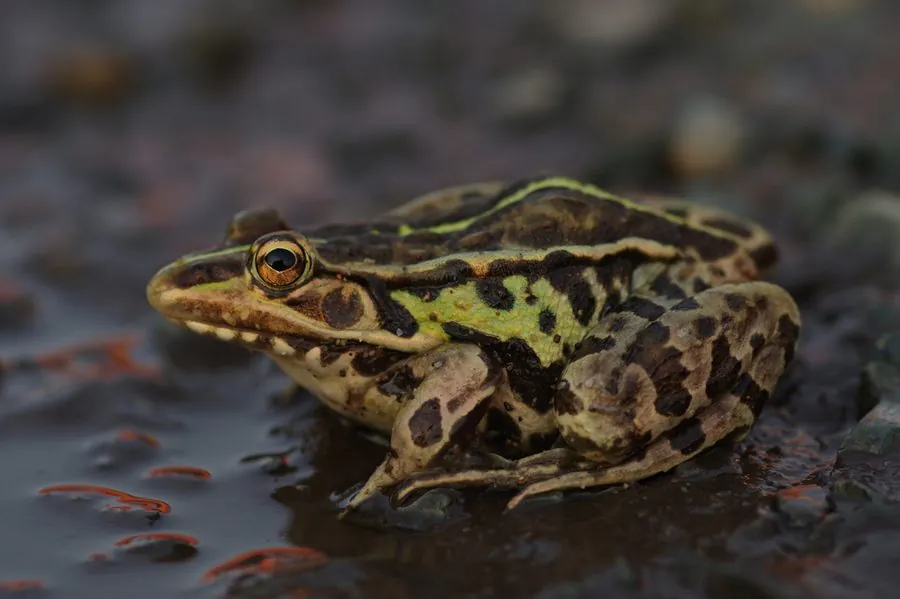

两栖动物 · 动物界
黑斑蛙 Pelophylax nigromaculatus

中国最常见的青蛙之一，背部布满黑色斑点，既善跳跃又会游泳，是稻田害虫的重要天敌，也是很多人童年记忆里的“青蛙”。
- 分类
- 门脊索动物门纲两栖纲目无尾目科蛙科属侧褶蛙属
- 栖息环境
- 稻田、池塘、沟渠、沼泽及静水水域的岸边
- 地理分布
- 中国大部分地区，以及朝鲜半岛、日本和俄罗斯远东
- 保护级别
- IUCN 无危（LC）；中国“三有”保护动物
物种志
黑斑蛙体长 5–8 厘米，头长略大于头宽，吻端钝圆，背部皮肤光滑，呈黄绿、灰绿或橄榄绿色，散布不规则的黑色斑点，背侧褶明显，腹面白色；后肢发达，趾间有蹼，既善跳跃也善游泳。繁殖期雄性在咽部两侧鼓出鸣囊，发出响亮的“呱呱”声吸引雌蛙。
它广泛分布于中国南北各地的稻田、池塘、沟渠和沼泽，白天隐蔽在水边草间，傍晚和夜间捕食蛾类、蝗虫、蚊蝇、蜘蛛等，对控制农业害虫意义重大。每年 3–6 月繁殖，雌蛙产卵 1000–3000 枚，卵块漂浮在水面上，约 3–5 天孵化，蝌蚪经 2–3 个月变态。由于大量捕食“田鸡”、农田使用农药以及栖息地减少，野生数量明显下降；它被列入中国“三有”保护动物名录，应避免捕食野生个体。
形态与习性
- 食性蛾类、蝗虫、蚊蝇、蜘蛛等昆虫
- 体长5–8 cm
- 体重约 30–80 g
- 寿命约 5–8 年
- 繁殖卵生，每窝 1000–3000 枚，约 3–5 天孵化
- 活动节律昼伏夜出，繁殖期白天也鸣叫
- 保护中国“三有”保护动物，禁止非法捕捉
趣味知识
- 黑斑侧褶蛙名称中的“侧褶”，指背侧两条隆起的长褶，是它最明显的特征。
- 它的蝌蚪以藻类和水中碎屑为食，变态后才改为捕食昆虫。
- 雄蛙鸣叫时喉部两侧的鸣囊会鼓成透明气泡，起到扩音作用。